来源：https://uwk2kh7dn8u.feishu.cn/docx/JJjPdocqfoY18DxAxl9clqasntg
大家好，我是木棉。
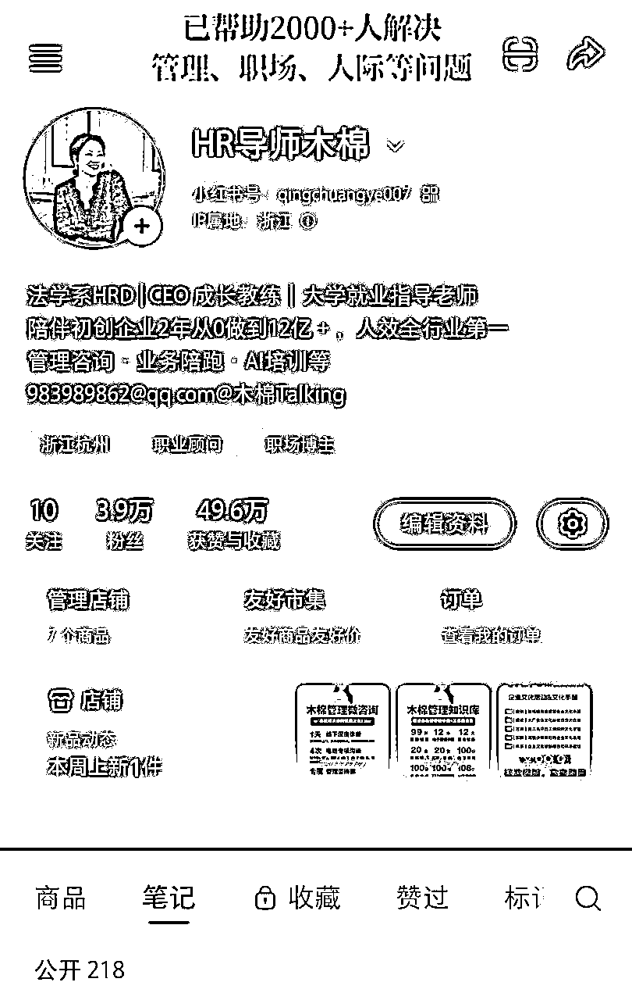
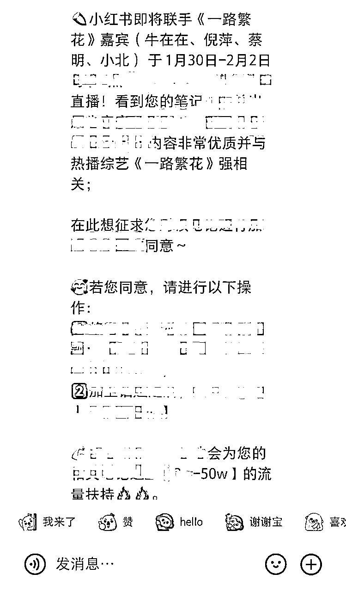
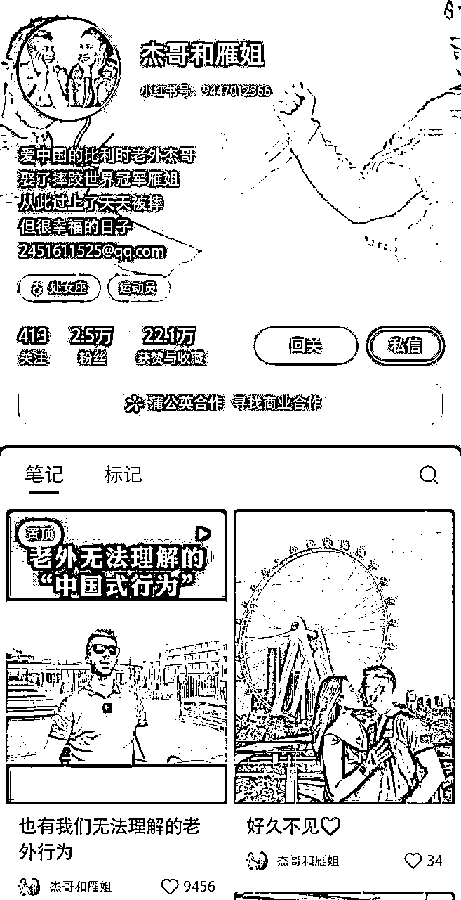
自己曾被“3天起号”“月入10W”的案例激励，也被其困扰痛苦，作为纯小白入局小红书，想用真实经历告诉你：
CEO管理胶囊（4次1v1诊断+工具库）
团队管理闭门会（线下+线上复盘）
木棉心得：在小红书，高客单成交=专业内容×信任累积×精准筛选。我一般是建议先随喜解决一个具体问题，再用1个月测试7999元产品模型，再逐步释放高价服务。
小红书流量密码：封面大字报+干货清单体+争议性/引导性结尾提问
封面公式：职场干货+管理痛点笔记（人群+痛点+痒点）
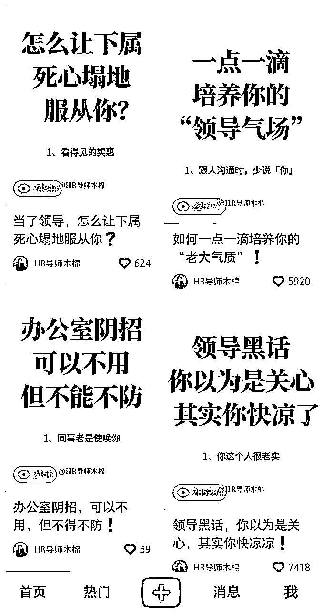
主页预留钩子：置顶笔记送《管理避坑手册》/免费回答咨询问题
朋友圈养信任：围绕在卖的产品，周更3条内容（CEO陪跑学员喜讯+个人觉察感悟+共性问题的解答），此处全是真实素材和真实感悟，包括自我批判，主打“佛系营销+大活人感”，可参考我朋友圈。
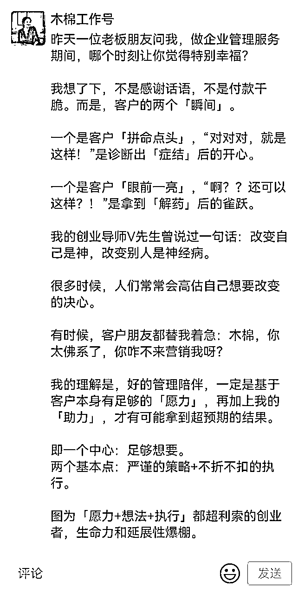
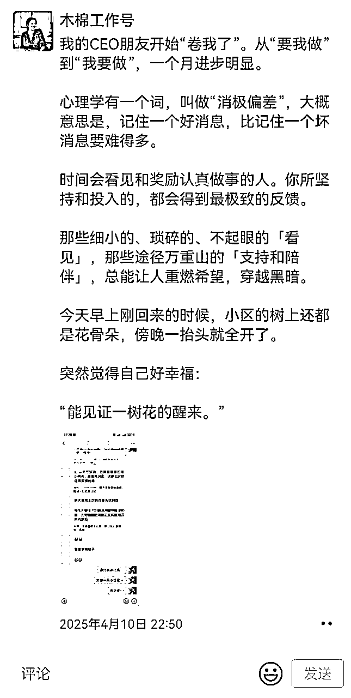
PS：此处不觉得做的很好，主要是我自己比较佛系+心力有限，只想输出我内心的真实所思所想，没办法去做更多的营销内容，以便更好地转化（一是不想硬营销，二是因为不想做虚假宣传）
解答促转化：
前期（免费-低费阶段）：
后期（高价咨询）：
设置明确门槛：1v1深度咨询，9800/小时（熟人介绍随喜）
“佛系销转路径”大概是这样的↓
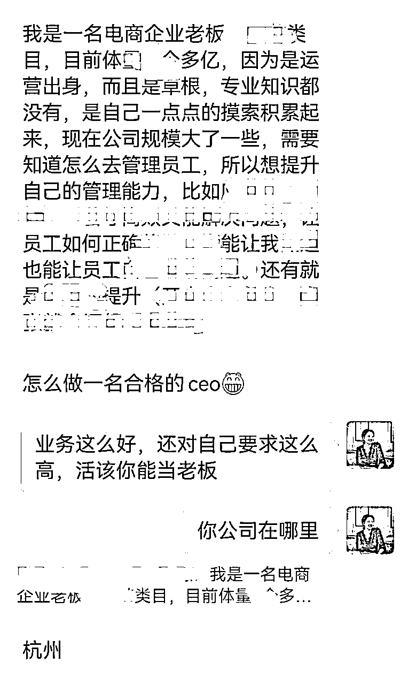
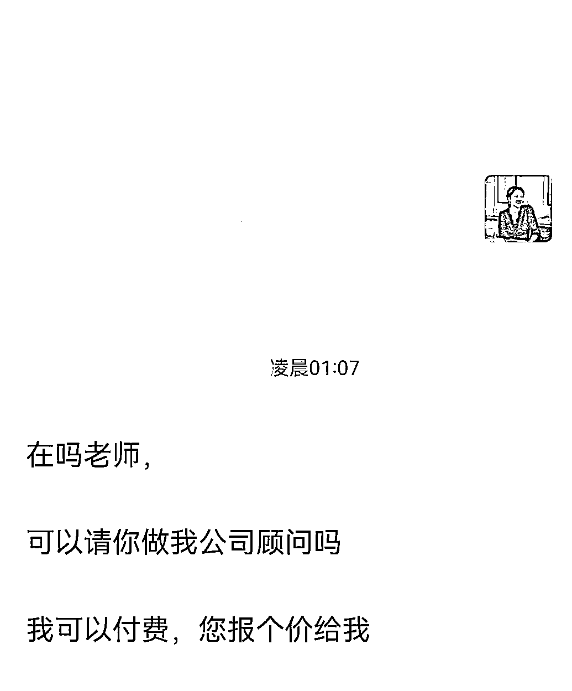
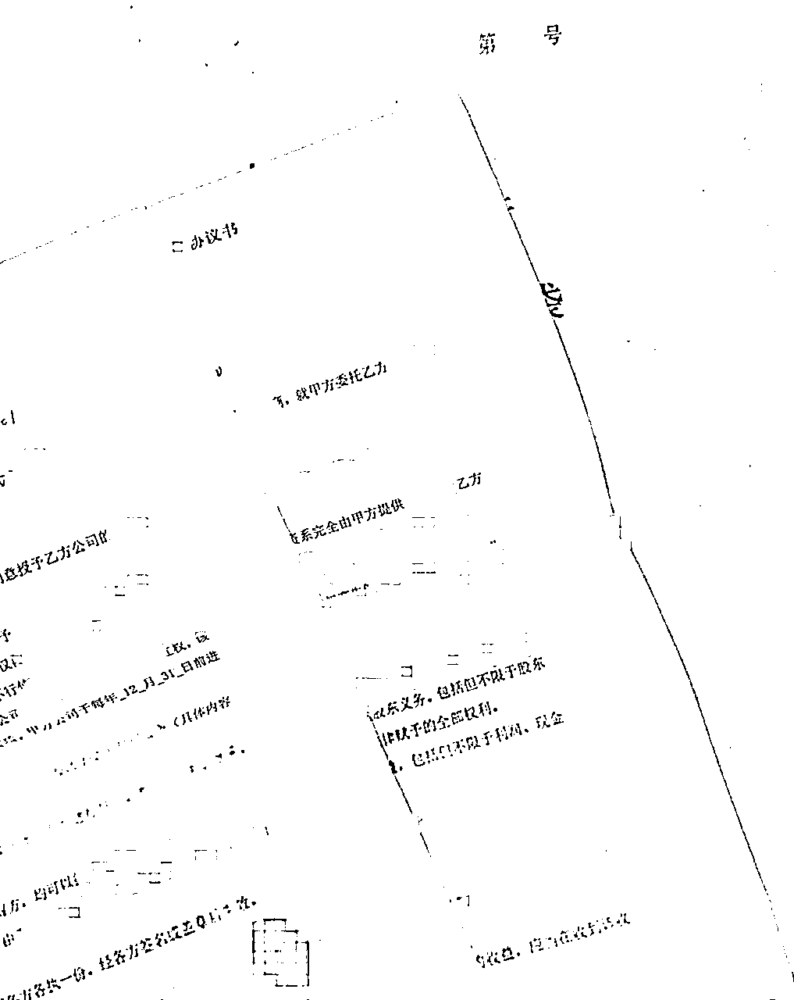
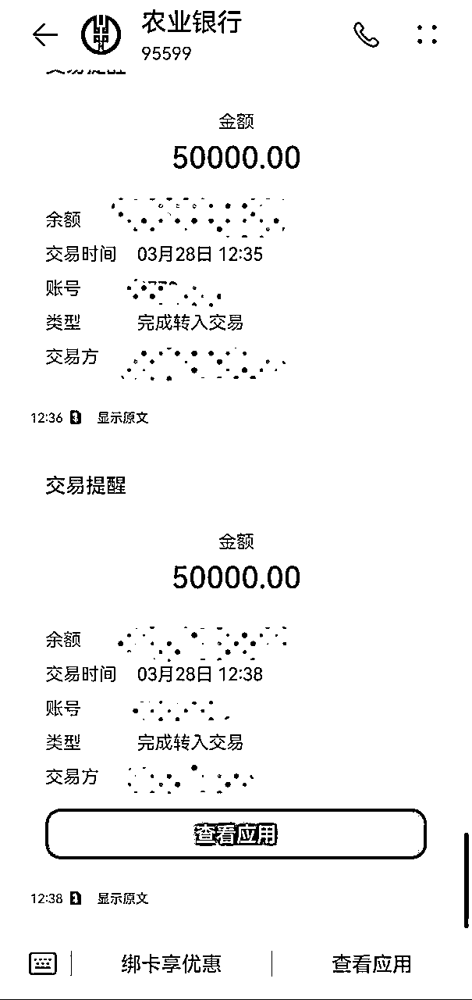
1-职场博主在小红书中占比本就不多，跟我相似背景的博主，大多专注“人力资源、企业管理”，以输出干货为主，专家感较强。
2-聚焦“职场+管理+女性成长”的“赛道专家+知心大姐+女性创业者”的比较少。
（我的背景：小镇女孩，双非本科，法学毕业10年，从月薪1900的HR管培生做到年薪百万女高管，后来自己创业。10年人力资源管理，做过一线业务，带领30+销售团队，兼管政府关系、新业务投资与孵化等。助力初创企业2年内GMV从0做到12亿，登顶国货第一，人效全行业第一。）
我的成长背景勉强算是多边形战士吧，因为涉猎的领域比较多，所以可以去写的内容会比较多层次一些（人生的路，每一步都没白走）。
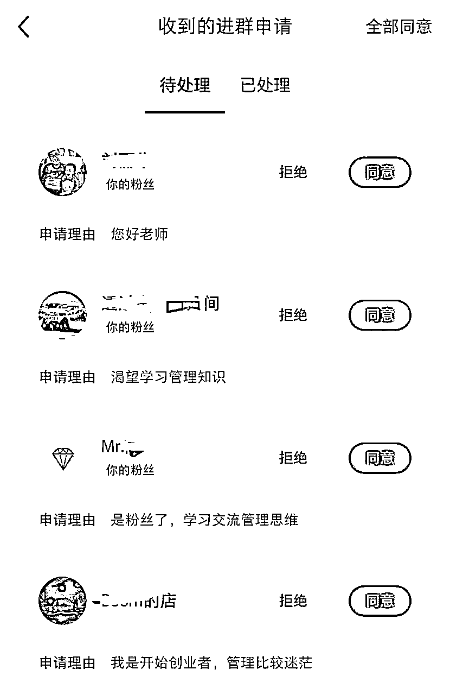
1-坚持日更笔记：每周4-6篇，周末休息1-2天（生病和处理家事时除外）。
2-坚持高标准输出：每天早上07:30起床写稿，不符合自己交付预期会放弃，重新写。
3-坚持优质内容：专业（40%）+有用（40%）+接地气（20%）。
执行技巧：
1-内容上真诚分享，减少说教成分，以真诚输出为主。
2-读者的求助咨询，但凡我有时间，我都会认真回复。
3-专业功底扎实，目前为止解答问题都能拿到正反馈。
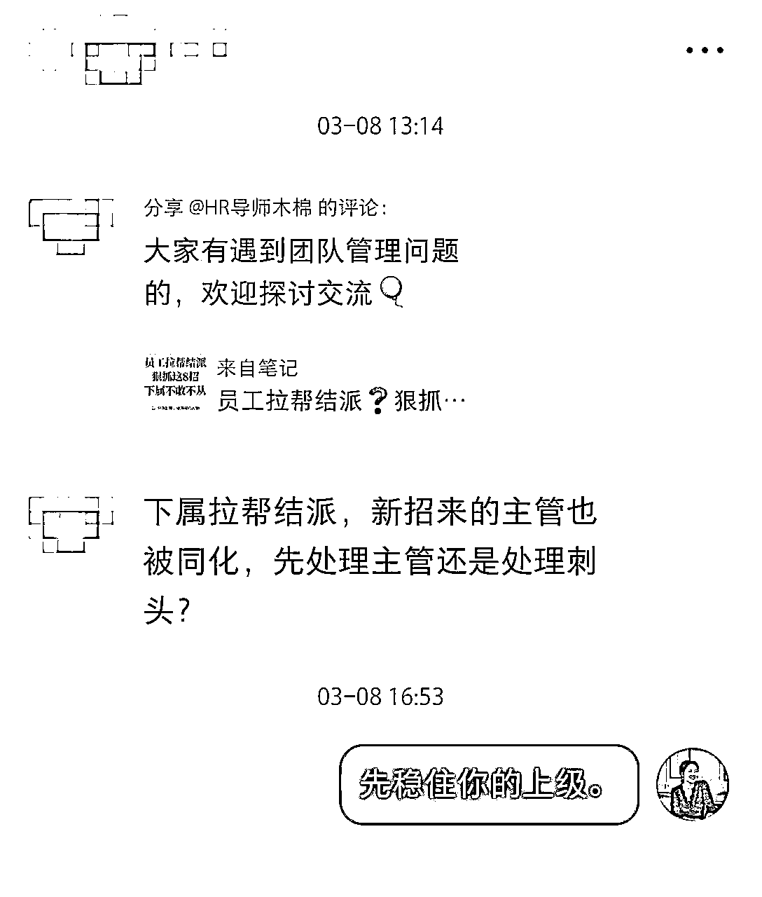
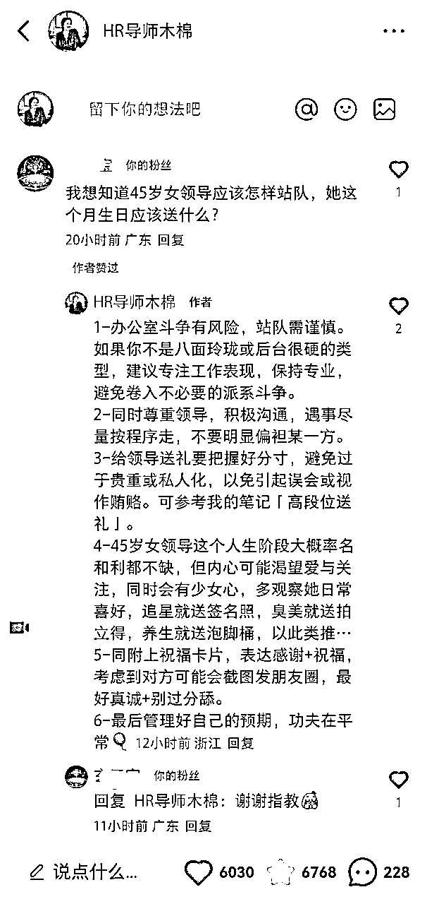
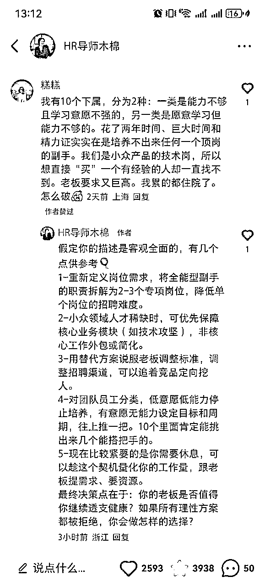
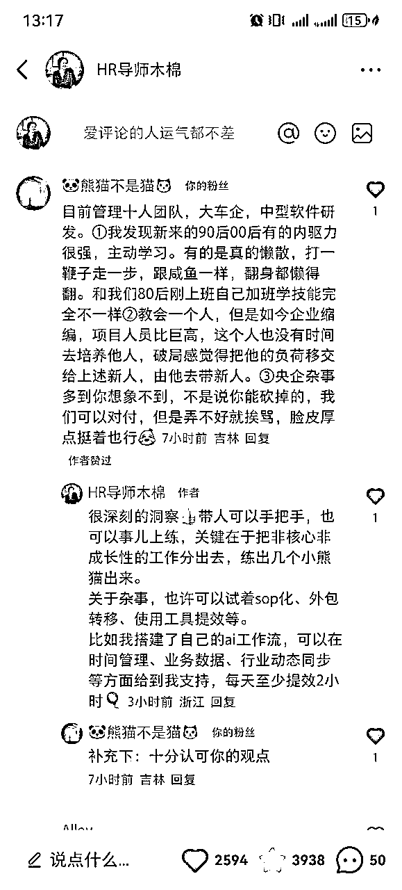
此处生财有术上已经有足够多的大佬分享了很多干货，我就不再赘述了，只补充几个我个人的心得和技巧。
我是谁？→我要往哪里去？→我的长短版是什么？→我需要注意什么？
举例↓
| 个人特点 | 自我认知 | 行动层面 | 注意事项 |
|---|---|---|---|
| 成就感驱动 | 做成一件难而正确的事，是我内心的「心之所向」，它带来的成长和快乐超出金钱本身。 | 谋定而后动，要耐得住寂寞，可能要独自熬过很长一段没有正反馈的周期。 | 1-过于追求效率，而焦虑心急。 |
| 学习能力强 | 只要静下心来学习，都能快速拿到不错的结果。之前在职场N段跨行、成功转型经历已被验证。 | 要有足够的愿力，花足够多的时间，把新知识吃透。这个过程会有非常多困难，但都是正常的。 | 1-如战略不清晰，可能剑走偏锋，做的越快，跑的越偏。 |
| 完美主义 | 想把自己手上的每件事都做到极致，觉得爱与信任不可辜负，能做90分，绝不60分糊弄。 | 梳理好优先级，有节奏的推进整体进度，稳中求进，做长期主义。 | 1-降低完美主义，防止陷于细节而忽略全局的优先级。 |
| 对人真诚 | …… | …… | …… |
这是我的盖洛普（2024年4月版）↓
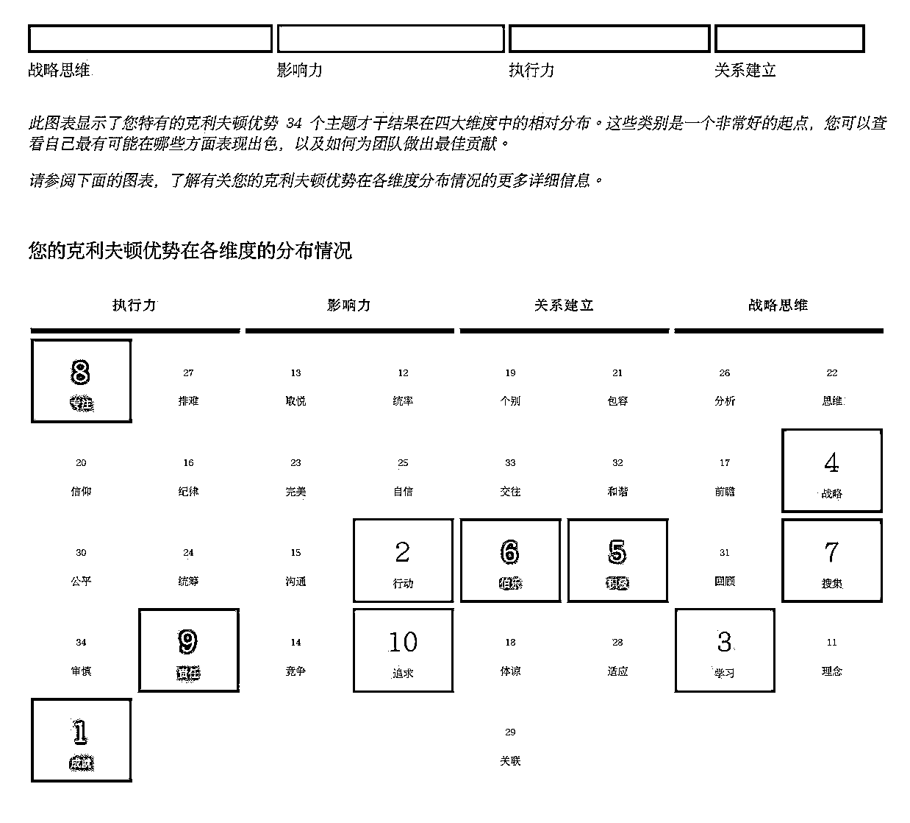
说实话，我无数次想放弃，无数次差点倒在“拐点”出现之前。
我给自己定的目标是，过生日那天（阳历1月份）能做到1W粉，就算成功了。
无论是选择创业还是上班，我都无愧无憾了。
不是给别人交代，而是给自己一个交代。
我想说的是：
看结果总是美好的，但是大部分人会在前五个月放弃。
只要方向是对的，人是对的，你只需坚持住，就能超越90%的同行。
截止到4月份，我对标的10个账号里，我的单账号涨粉速度已经超越90%同行（视频+图文）。
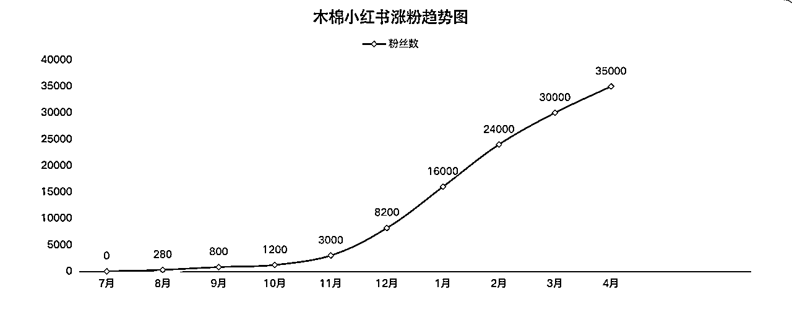
我们是第一次做博主，但不是第一做员工。换位思考一下，我们希望别人给我们资源和流量，我们能为别人做什么？
端人碗受人管，如何站在利他的角度，帮助平台拉升关键指数（拉新促活）和帮助官方人员完成KPI（如某活动目标），是我们要去思考的。
可以通过参加平台活动，加官方运营老师，定期跟他们同步下进度和需求，一般再有后续活动多少会带着你（本身内容优质是前提）。
举个例子：在参加官方某次活动上，笔记爆了之后我立刻联系了官方人员，感谢+痛点+需求+表态，助力我在初期2周涨粉6000+（内容好是前提，做得好要主动让官方看见，这对他们也是正向的反馈）。
还有，有流量扶持的时候别偷懒！抓紧时间多更笔记，能多吃一口是一口！（我最多时日更4篇原创文章）
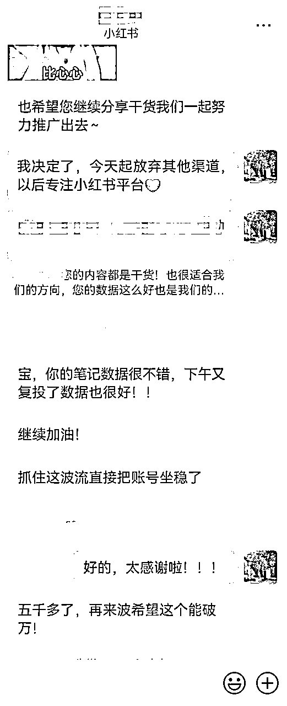
背景：苦熬两天一夜，不吃不喝写了一篇干货文，浏览量只有54。看着别人随随便便的“水文”却能轻松高赞，心态崩了。
如何解决的：1-自我反思：“曲高和寡”本身是不是一种傲慢与偏见？是你默认为你比读者“更专业、更牛逼、更懂他的痛点？”
2-自我激励：这个问题大家经常来问我，我只能1V1的讲。而现在我一次性给54个人讲了，它也是有价值的。
3-调整策略：写大家想看的＞我自己想写的，先被大家看见＞先被大家认可。发完之后半小时不看手机，数据好就乘胜追击，数据不好就下篇再努力。
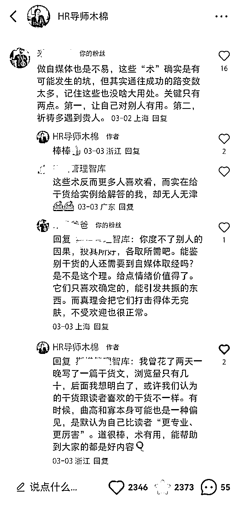
背景：高烧误操作被封禁14天，陷入自我怀疑。 身体的病痛夹杂着压力袭来，我翻来覆去，一夜没睡。还要坚持吗？我是不是不适合做这个？
如何解决：
对标同行：我翻了一夜的笔记，看对标、看同行、看大博主，看大家都是发了多久才有了今天的成绩，发现都是很长时间的沉淀。
盘点粉丝：我点开粉丝列表，3000多个粉丝注意看过去，我发现只有一个人的粉丝数超过3000粉，我突然意识到：哪怕我觉得自己做的不行，我也已经是1/3000了啊！
复盘内容：我认真阅读了自己的每篇笔记，竟然感觉“我写的真好啊！我怎么写这么好啊！”，不禁感叹，如果不是做小红书，我怎么会静下心来认认真真写这么多干货内容呢？这也是倒逼我在输出和沉淀啊。
调整状态：身体有问题，就应该好好休息，而不是玩命工作，强行硬扛只会毁掉事业。
核心收获：短期挫折≠失败，而是沉淀期。 成就感知差时，用客观数据校准。14天休整后满血复活，解封再战。
背景：出一篇文章，同行照着抄一篇。
如何应对抄袭：1-策略上：前期组织热心读者组团举报，中期开通原创保护，后期搭建矩阵多平台分发（正在做）。
2-心态上：不要生气（说实话，我前期做不到，特别是自己苦熬出来的原创），专注前行路，他们就只能是跟随者。
背景：被读者恶评，恶意辱骂，骂完之后就拉黑溜了。
如何应对恶评：1-自省：见贤思齐，见不贤而内自省，看看有啥做得不到位的，有的话赶紧改，感谢人家提醒。没有的话，要么无视，要么“温柔一击”，马上回归自己的重心。
2-转念：恶评背后是你的关注度和影响力在上升，被误解是表达者的宿命，平常心对待就好。
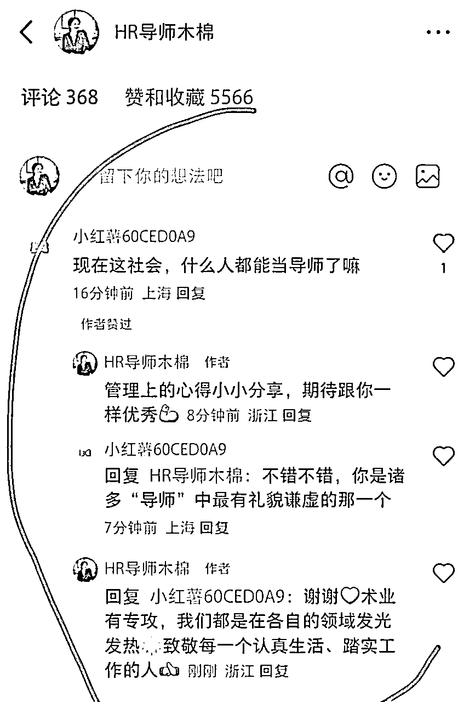
我们核心客户群体是B端，我发现老板不缺信息，缺的是「可信的解决方案」。特别是现在经济形势下行，业务都不好做的情况下，谁能帮他们降低决策压力，谁就能赢得长期信任。
老板除了关注商业和管理，他们同样关心：成长焦虑（认知升级、行业趋势）、社交需求（圈层突破、资源链接）、人性洞察（团队管理、自我和解）、生活平衡（家庭关系、身心健康）等等
所以服务过程中，尽量不要说教 ，而是要要帮他们“自己找到答案”。
总结： “卖方案”不如“帮老板想明白”。用具体问题切入，用业务的全景视角进行拆解，用引导启发代替单纯的说教，自然而然的成为他们的“外脑”。
之前在生财上班，面对竞争对手疯狂抄袭，亦仁老师之前有句话，对我触动很大，大概意思是：
“没有永远的对手，只有没找到的合作点。”
在职场博主赛道，最难的不是涨粉，而是转化。如果能帮竞争对手解决转化问题，就能建立合作。
比如粉丝1000~5000的职场博主，数据不错，但变现方式单一（卖资料/模板，客单价低），没有高效变现路径，造成流量浪费。
总结：竞争的本质是效率之争，而合作的核心是价值互换。找到痛点，设计共赢机制，对手也能变成盟友。
快乐心法：享受过程、自我圆满、影响他人
享受过程：
自我圆满：
影响他人：
知识IP赛道：专业度拉高护城河，好内容永远都稀缺
流量趋势：短视频>图文，但图文仍是引流利器
平台风向：企业号矩阵化，但个人IP仍有缝隙
细分领域卡位：
从“职场博主”转型“博主孵化器+产品运营池”，在平台卡住职场管理头部博主的生态位。
内容产品化：
内容上，除了考虑流量本身之外，持续输出真正优质有价值的内容，并沉淀成册。
产品上，筛选更多优质的B端和C端产品，丰富和聚焦产品体系，计划在除了职场管理类之外，开辟更多的领域，用好流量池，深度转化。
多平台联营：
从单兵作战到团队运作，小红书引流+视频号直播+矩阵铺专业账号+线下销转+素人孵化赋能等。
抱紧生财：先看够至少10篇精华帖（跟着生财航海走一遍，能少走90%的弯路）
先抄再超：找3个对标账号，像素级模仿前30篇（封面/标题/结构，内容不要全抄！）
小步快跑：每周迭代1-2个细节，持续优化（第1周改标题/第2周优化头图）
拒绝完美：完成比完美重要100倍（先发够10篇60分内容，再追求爆款）
拥抱变化：很多时候，你的人设和产品是被动态变化塑造的结果，要以万变应万变（我的账号定位经历了四次调整：知识库→HR专家→管理专家→CEO成长教练+知心大姐。产品从TOC→TOB+TOC）
1-不要空想，市场会给你答案，业绩即尊严。
2-大胆求助，脸皮厚，能吃肉。生财是最温暖的真诚互利平台，大部分人都乐于帮你一把。
3-别人的评价没那么重要，你要成全你自己。
4-身体健康是第一要义，创业是个持久战，不是比谁跑得快，而是比谁活得久。
感谢@亦仁老师的微天使，感谢生财有术，让我有勇气迈出了第一步，从此打开了新世界的大门，近亦仁者富！亦仁老师的话，大家一定要“听话照做”，因为一定能拿结果！！！
感谢@V先生，在我创业初期非常迷茫的时候，通话2小时给我指点迷津，告诉我有什么需求跟他说。有师如此，何其幸运。
感谢@条形马哥日常的答疑解惑，让我下定决心allin小红书，我现在60分及格了，能筛选出优秀的供应商了！
感谢@宋大范姐姐以HR过来人视角帮我深度分析了我可能面对的困境与挑战，让我少走90%的弯路！
感谢@茄子帮我剖析自我、解析盖洛普，让我看到了自己从未看到过的视角，达成自我和解：4个矛盾体的糅合→父性（理性果敢、快速拿结果）和母性（温柔体贴、感性有温度），精致（对内对外高要求）和粗糙（钝感、大度大气）。
感谢@刀姐的“欢迎你加入冒险岛！”，让我对「快乐创业」的女生是什么样有了具体想象。
感谢@总裁高在我做什么项目还没有定的时候，第一个主动提出愿意投我100万，给了我莫大的鼓励。
感谢@楠姐真心实意的批判我、托举我，真诚、直接、诛心，帮我打开了心结，并让我明白大胆标价、明确底线并不可耻且有用。
感谢@贝果和Albert一路以来无私分享、默默支持、暖心关怀，有这样的朋友在，常觉人间值得。
感谢@比比先森，最好的小红书教练，暖心、真诚、专业，在初期定位和输出上帮我指明了方向。
感谢@纪老板和@戴巍老师带我见大佬，帮我牵线搭桥，用实际行动给我关怀和鼓励。
感谢@涛哥真诚分享，帮我引荐小红书大佬@富贵，我欠你的两碗陈八两怕是还不清了。
感谢@王欣然 @陈雪 @书豪@大树哥@兰姐等好友们一路以来的陪伴和支持，感恩！
致谢生财@黄阿兜，约稿被我拖了4个月，中间忙于各种事情一度想放弃，因阿兜的信任鼓励才最终写出来啦~
最后我想对一年前迷茫纠结、找不到方向和自我的木棉说：
人生永远不存在绝对正确的选择，想要让选择变得正确，就得相信当下的选择，坚定的走下去。
当你竭尽全力时，神灵将会现身。